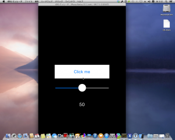
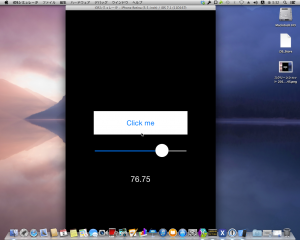
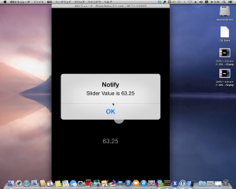
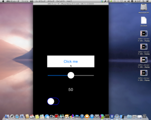
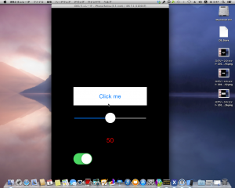

昨日の続き。
Experimentation
1. UISlider
まずは、MonoTouch.UIKit.UISliderを追加します。 これは**.NETでいうSystem.Windows.Forms.TrackBarになります。 また、UISliderの現在値を表示するMonoTouch.UIKit.UILabelも一緒に追加します。 これは.NETでいうSystem.Windows.Forms.Label**になります。 ボタンの上にUISliderが追加されました。 あと、 ビルド実行するとこうなります。
 スライダーを動かすと、スライダーの位置に応じてラベルの数値が変化します。 
{kind=link}
{kind=link}
2. UIAlertView
次はMonoTouch.UIKit.UITextViewを追加します。 これは**.NETでいうSystem.Windows.Forms.MessageBoxです。 iOSの世界ではアラートビュー**ですね。 サンプルを修正します。 ビルドして、ボタンを押下すると、スライダーの値をユーザにアラートビューで通知します。

{kind=link}
3. UISwitch
最後はMonoTouch.UIKit.UISwitchを追加します。 これは**.NETでいうSystem.Windows.Forms.CheckBoxです。 iOSの世界ではスイッチコントロール**ですね。 **中間値(Indeterminate)**は対応しているんでしょうか? サンプルを修正します。 ビルドするとスイッチコントロールが追加されています。
 スイッチを動かすと、ラベルの色が赤に変化します。 
{kind=link}
{kind=link}
Conclusion
今回は、 System.Windows.Forms.Labelに対応するMonoTouch.UIKit.UILabel。 System.Windows.Forms.TrackBarに対応するMonoTouch.UIKit.UISlider。 System.Windows.Forms.MessageBoxに対応するMonoTouch.UIKit.UIAlertView。 System.Windows.Forms.CheckBoxに対応するMonoTouch.UIKit.UISwitch。 を使用しました。 あくまで、対応するというのは私の偏見ですが、どういうものに似ているか、という認識は取っつきにくさを解消するための方便だと思います。 まだ、紹介していないコントロールは次回に回します。